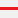

Measurement Results:

Switch Basemaps
Google Roads
Google Satellite
Google Hybrid
Google Terrain
Highlight an Area
Select a Single or Multiple Areas To Highlight
| Game Animal Distributions: |
Download Highlighted Area as KML
Click the link(s) below to download the highlighted areas you selected as a KML.
SELECTED GAME DISTRIBUTION KML
SELECTED GAME DISTRIBUTION KML
Upload Waypoints & Tracks from GPX files
Add your own location data, such as GPS waypoints and tracks. If you data is in another format such as kml, shp, txt, csv, wpt, dat, or some other GPS specific file type you may find GPS Visualizer or GPSBabel helpful tools for converting them to GPX.
Place or Coordinate Search
Make Measurements or Get Coordinates
After you have selected your tool and units, click the X in the corner to start making measurements on the map. Results will be displayed in the lower righthand corner of the map.
Draw On the Map
Add text to your map:
Create Printable Map
Enter a map title:
Select a print layout:
Select a print format:
The 'Creating Map...' message indicates the map is being generated.
When the map is ready, "CLICK HERE TO DOWNLOAD YOUR MAP" will appear in this window. Click this hyperlink to open your map.

Select a print layout:
Select a print format:
The 'Creating Map...' message indicates the map is being generated.
When the map is ready, "CLICK HERE TO DOWNLOAD YOUR MAP" will appear in this window. Click this hyperlink to open your map.

Share the Map View
Copy the link below to share the current map view.
How To Use the Map Center Toolbar
Use the toolbar located on the lefthand side of the map to modify the maps appearance and access tools for measuring, drawing and printing.
Turn Layers On/Off
Using the checkboxes, you may turn on and off layers of administrative boundaries, land management overlay, trails, and campgrounds. Use the slider above each layer group to modify the transparency.
NOTE: Some layers (depending on the data source and your network speed) may take some time to render.
Change the Basemap
You may select from a number of basemaps including ArcGIS aerial imagery, terrain, topographic and street maps and Google roads, satellite, hybrid, and terrain. When creating a PDF/PNG, please choose a non-Google basemap.
Highlight an Area
Select an area from the list and the map will zoom and highlight the boundary in purple.
Download Highlighted Area as KML
After you have selected an area to highlight, this tool will be activated. Open the tool and click the hyperlink(s) to download Google Earth KML of the area you highlighted.
Upload Waypoints & Tracks
If you would like to add your own location data, such as GPS waypoints and tracks, upload them as a GPX file using this tool. If you data is in another format such as kml, shp, txt, csv, wpt, dat, or some other GPS specific file type you may find GPS Visualizer or GPSBabel helpful tools for converting them to GPX.
Coordinate or Place Search
Type a place into the place search box or coordinates in the longitude/latitude boxes and click Go/Go to Coordinates. The map will automatically zoom to the location. Coordinates will be labeled with the longitude/latitude. You may be use the clear buttons to clear the points graphics off the map.
Measurements & Coordinates
First, select your tool - Area, Distance, or Location. Then, select the units you would like the results to be in (acres, sq miles, ...miles, meters,...degrees, DMS (degrees minutes seconds). Finally, close the Measurement window and begin taking measurements. Measurement results will appear in the lower right and the modal window which you may reopen. Double-click to close polygons if measuring for area.
Draw On the Map
Select a draw tool and the window will automatically close and you can begin adding shapes to your map to highlight an area or specify a certain point. Double click to close polygons. To add a text label to your map, first add the text you would like to appear in the textbox after Add text to your map and then click the Add Text button. Click on the map to add the label.
Creat Printable PDF
Create a printable version of your customized map in Adobe's Portable Document Format (PDF) or as an image (PNG). You may add a custom title, select a layout, select a print format, and then click Create Map! to open the map in a new window. Depending on the browser and PDF plug-in you are using, there are a number of ways to save/print the PDF/PNG by either using the browser menu or saving the PDF/PNG. It may take some time to generate the PDF/PNG.
Contact Us
Have a question/comment/complaint about the application? Contact Us! Any feedback (good or bad) is greatly appreciated.
Map Center Disclaimer
The information displayed in this application is derived from Idaho Fish and Game (IDFG) digital GIS datasets, as well as data developed by other sources. The data presented in this application is not “live” data, but consists of data that is updated on a regular basis by IDFG and the other agencies that have provided data. Users of the information displayed in this application are strongly cautioned to verify all information before making any hunting decisions or pursuing game animals by referring to the boundaries published in the current IDFG regulation booklets.
This application is to be used for informational purposes only and has not been prepared for, or is considered to be suitable for legal, engineering, or surveying purposes. IDFG cannot accept any responsibility for any errors, omissions, or positional accuracy, and therefore, there are no warranties which accompany this product. In no event shall IDFG be liable for any special, indirect, or consequential damages or any damages whatsoever resulting from loss of use, data, or profits arising out of or in connection with the use or misuse of the information herein provided.
This application is maintained during normal business hours 8 a.m. to 5 p.m, Monday through Friday. If any interruption in service occurs during non-business hours, please contact us and the problem will be addressed at the beginning of the next business day.
To learn more about the application and to review known issues and application updates, go to the help documentation.
In accordance with our terms of use for this site, you agree to this disclaimer..
- Turn Layers On/Off
- Change the Basemap
- Highlight an Area
- Download Highlighted Area as KML
- Upload Waypoints & Tracks
- Coordinate or Place Search
- Measurements & Coordinates
- Draw On the Map
- Create Printable Map
- Share the Map View
- How To...
*Use the sliders to increase/decrease layer transparency
Waypoints

Tracks